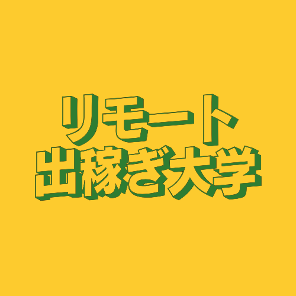
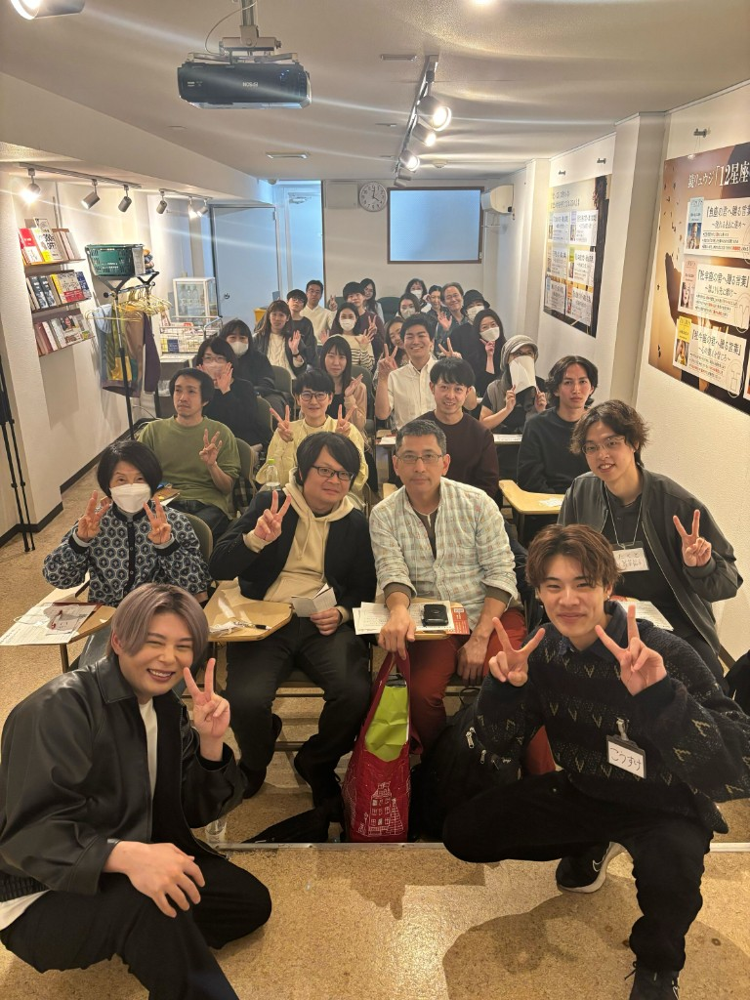
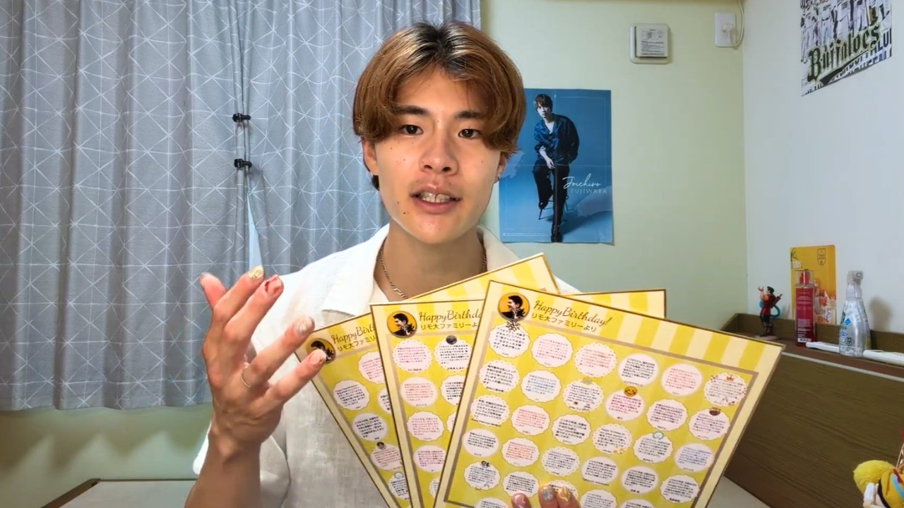

MY STORY
新卒2か月退職。
コンビニ店員。
25歳で起業。
今では理想に近い生活をつかんでいますが、昔の僕は本当に落ちこぼれでした。

KOSUKE SUZUKI
鈴木 孝輔
Founder & CEO, Japalent Inc.
新卒で入った会社を、パニック障害のため2か月で退職。SNSの発信もうまくいかず、早朝のコンビニ勤務と引きこもり同然の日々が続きました。
転機は海外リモートワークでした。日本にいながら世界から仕事を受け、日本語や丁寧さが国境を越えて評価される。その事実に気づいてから、人生が動き始めました。
2か月間本気で取り組み、時給8,000円まで到達。同じように悩む人に選択肢を届けたいと思い、YouTubeを始めました。
リモート出稼ぎ大学を立ち上げ、1年後に株式会社Japalentを設立。今は、当時の自分に届けたかった未来を、仲間と一緒につくっています。
僕を突き動かすものはいつだって好奇心です。

YOUTUBE / 18:32
新卒2か月退職・コンビニ店員だった僕が、1年で人生逆転できた理由